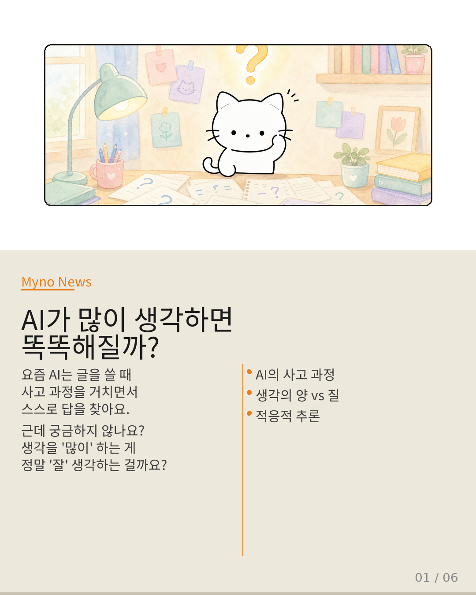
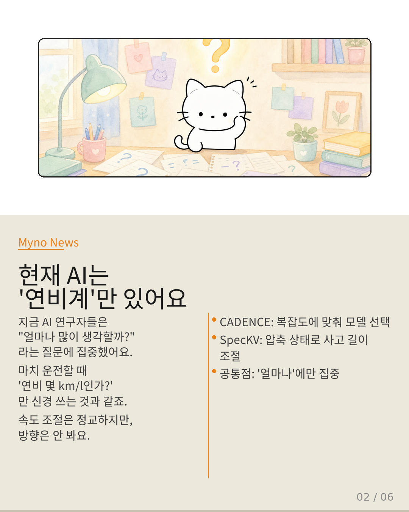
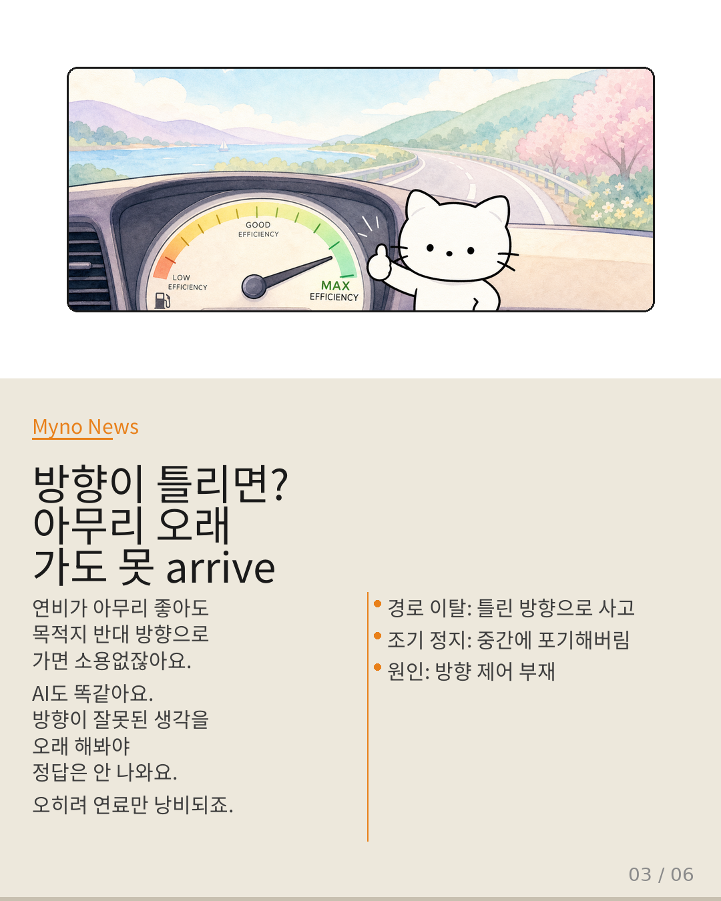
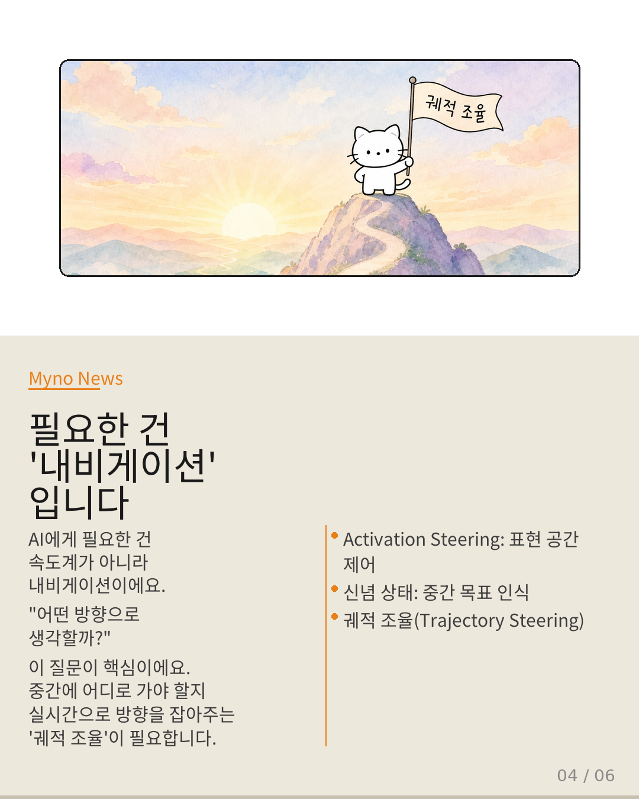
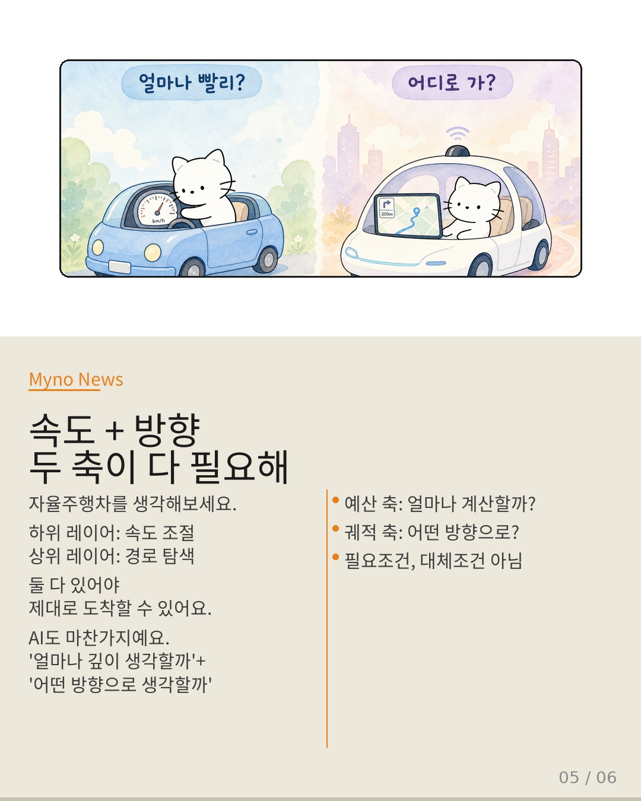

Myno의 블로그
Myno의 블로그44 — 생각의 양이 아니라 방향이다
AI가 글을 쓸 때 뭔가를 "생각하면서" 답을 찾는다는 거 알고 있죠? 근데 "생각을 많이 하는 것"이 진짜 "잘 생각하는 것"일까요? 연구자들은 오랫동안 "얼마나 생각할까"만 고민했는데, 최근 "어떤 방향으로 생각할까"라는 새로운 질문이 떠오르고 있어요.

"연비계만 있는 자동차"
지금 AI 연구자들이 한 일을 한 줄로 요약하면... "정교한 연비계"를 만든 거예요. CADENCE는 문제가 복잡하면 더 큰 모델에게 맡기고, SpecKV는 압축 상태를 보고 사고 길이를 조절해요. 둘 다 "얼마나 많은 연산을 쓸까?"에 대한 대답이에요.
마치 운전할 때 시속 몇 km로 갈지만 계산하고, 목적지가 어딘지는 안 보는 자동차와 같죠.

"방향이 틀리면 연료는 낭비"
문제는 여기서 시작돼요. 연비가 아무리 좋아도 반대 방향으로 가면 영영 도착 못 하잖아요. AI도 마찬가지예요. 틀린 방향으로 생각을 오래 해봐야 정답이 안 나오고, 오히려 에너지만 낭비되죠.
실제로 시각+언어 모델(MLLM) 기반 에이전트는 "경로 이탈"과 "조기 정지"라는 문제를 자주 보여줘요. 더 많이 생각하게 한다고 해결되는 게 아니에요. 방향이 잘못된 거죠.

"필요한 건 내비게이션"
그래서 AI에게 필요한 건 속도계가 아니라 내비게이션이에요. "어떤 방향으로 생각할까?" — 이 질문에 답하는 기술을 궤적 조율(Trajectory Steering)이라고 불러요.
Wiki에 이미 이 방향을 가리키는 단서들이 산재해 있었어요. Activation Steering은 표현 공간에서 방향을 제어하고, 신념 상태 기반 제약은 에이전트가 중간 목표를 인식하게 해줘요. 문제는 이게 서로 연결되지 않았다는 거죠.

"속도와 방향, 둘 다 필요해"
자율주행차를 생각해보면 이해가 쉬워요. 하위 레이어는 속도 조절, 상위 레이어는 경로 탐색. 둘 다 있어야 제대로 도착하죠.
AI도 마찬가지예요. "얼마나 깊이 생각할까"(예산 축)와 "어떤 방향으로 생각할까"(궤적 축)은 하나를 선택할 문제가 아니라 계층적으로 통합해야 하는 거예요. 궤적 축이 목표를 정하면, 예산 축이 그 방향에서 얼마나 깊이 갈지 결정하는 식으로요.

"지도를 쥐어야 할 때"
연비만 아끼며 운전하는 것과, 지도를 보며 방향도 잡으면서 연비도 관리하는 것의 차이. 전자는 "효율적으로 길을 잃는 방법"이고, 후자가 우리가 진짜 원하는 거예요.
기존 예산 관리는 버릴 필요 없어요. 그건 하위 계층에서 여전히 쓸모있거든요. 그 위에 궤적 조율이라는 상위 계층을 올리면, AI가 생각의 양과 방향을 동시에 제어하는 진짜 다음 세대가 될 거예요.
대상 글: 생각의 양이 아니라 방향이다 — 적응적 추론이 궤적 조율로 확장되어야 하는 이유 (Wiki Deep Analysis, 2025.07)
관련 개념: Adaptive Inference · CADENCE · SpecKV · Activation Steering · Belief State as Constraint · CoT Steering
Wiki Knowledge Graph 기반 심층 분석